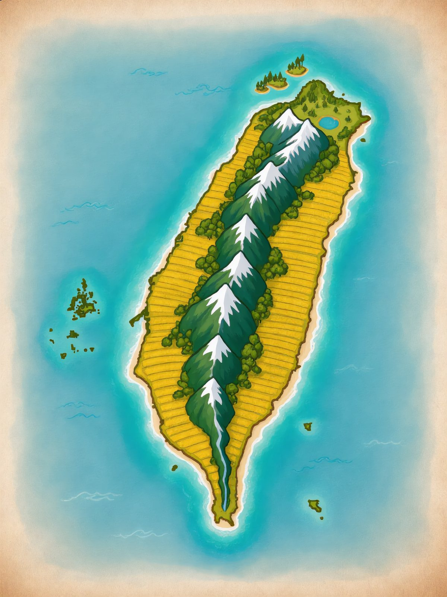

🗺️ 臺灣歷史與地理互動拼圖大冒險！
第 1 / 18 關
⭐
0
分
🔊
單元一

🧩 拼圖碎片區
按住拼圖，直接拖到地圖上發光的插槽！
🐾
我是石虎探險家「小石」！
臺灣藏著
18 塊知識拼圖
！
把拼圖扣上「北回歸線皮帶」、放進海浪插槽、
丟進考古挖掘坑、點亮原住民族圖騰柱吧！
一次就答對 +100 分，答錯會扣一點點，加油！
🚀 開始冒險
🔓 知識解鎖！
🎬
🎬 Kling 動畫預留位置
給老師：Kling 生成畫面提示詞
💡 30 秒看懂口訣
📝 考試大重點
下一題 ➜
🏆 探險完成！
⭐⭐⭐
0 分
🩹 白話知識急救包
🏅 看我收集到的 18 塊知識拼圖
🔁 再玩一次